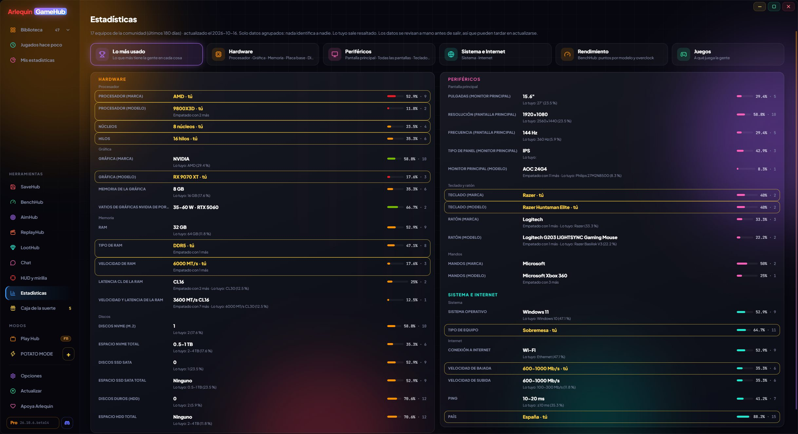

Создаётся во время игры, всеми вместе
GameHub не копирует чужие базы данных: его собственная строится из того, что программа узнаёт на ПК тех, кто ею пользуется, анонимно и только если вы хотите.

База данных, которая растёт, пока вы играете
Чтобы знать, где каждая игра хранит сохранения, что игра, а что нет, или сколько FPS она даёт на каждой видеокарте, GameHub строит её с нуля.
Что уже знает ваш ПК
GameHub читает то, что магазины хранят на вашем ПК (например, правила облака Steam), и ищет папку каждой игры.
Учится, пока вы играете
Если он не знает, куда сохраняет игра, он следит, какие файлы она пишет, пока вы играете, и запоминает папку сохранений.
Вы делитесь (если хотите)
С «Помочь улучшить Arlequin» эти пути, ваше железо и ваш FPS отправляются анонимно: никогда ваши сохранения, имя пользователя или пароли.
Проверяется и публикуется
Всё полученное проверяется, прежде чем попасть в публичную базу данных, которую GameHub сам скачивает, когда выходит новая версия.
Выигрывают все
Игры находятся сами на большем числе ПК, а оценки FPS становятся точнее.
Статистика сообщества
Какие видеокарты, процессоры, экраны и периферию используют те, кто играет с GameHub.
Как опрос железа в Steam, но подробнее: частота и задержки ОЗУ, тип матрицы и размер монитора, модели клавиатур и мышей, скорость интернета, виртуальная память… Всё в процентах, без ничего, что кого-то идентифицирует, в цветах каждого бренда, с процессорами и видеокартами, отсортированными по игровой производительности, и с вашими выделенными для сравнения.
Она рассчитывается по тому, чем делятся пользователи. Видна тем, кто делится своим железом или имеет ArlequinPro.
С «Самым популярным» с первого взгляда, геймпадами и всеми экранами (основным и дополнительными), материнской платой, производителем видеокарты, профилем ОЗУ и вкладкой «Производительность» с очками BenchHub по моделям, с разгоном и без.
Как пользоваться
- На боковой панели: Инструменты → «Статистика».
- В бете можно также фильтровать по тому, откуда скачан GameHub (Microsoft Store или сайт).
Оценка FPS для вашего ПК
Сколько FPS игра даст на ПК вроде вашего — ещё до того, как вы в неё сыграете.
По FPS, которые измеряют игроки (и настройкам графики и экрану, с которыми они играли), GameHub рассчитывает, сколько FPS каждая игра даёт на ПК, похожих на ваш, на каждом качестве (Низкое, Среднее, Высокое и Ультра) и что вас сдерживает — видеокарта или процессор. Это видно на странице игры.
Им нужны игроки: пока данных по игре мало, оценка берётся из требований Steam и приблизительна. Оценки сообщества видны тем, кто делится своими сессиями или имеет ArlequinPro.
Как пользоваться
- Измеряйте FPS (Настройки → Ваш ПК) и делитесь сессиями.
Ваши данные — ваш выбор
То, чем делятся, анонимно, необязательно и выбирается вами по каждой метрике.
С включённым «Помочь улучшить Arlequin» GameHub анонимно делится тем, что помогает всем: куда сохраняют игры (пути вида Документы/My Games/Игра), железом вашего ПК и, если вы измеряете FPS, сводкой ваших сессий. Никогда — ваши сохранения, имя пользователя, пароли или серийные номера.
Вы сами выбираете по одному, чем делиться (пути, железо, экраны, клавиатура и мышь, интернет, страна, сессии). Свои данные вы видите всегда; то, что идёт из данных сообщества (статистика и оценки FPS), видят те, кто делится этой метрикой или имеет ArlequinPro.
Как пользоваться
- Настройки → Конфиденциальность и данные.
- Все подробности — в политике конфиденциальности.
Присоединяйтесь к сообществу
⬇ Скачать напрямую 🛍️ Скачать в Microsoft StoreWindows 10 и 11 (64 бита) · Бесплатно · Обновляется сам